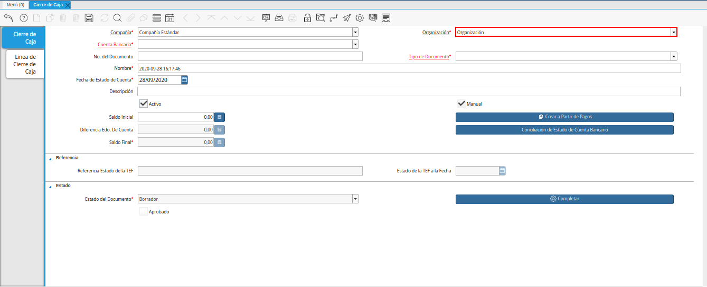
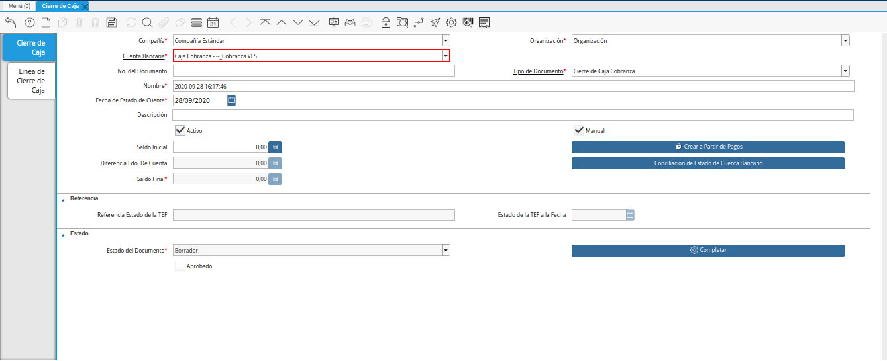
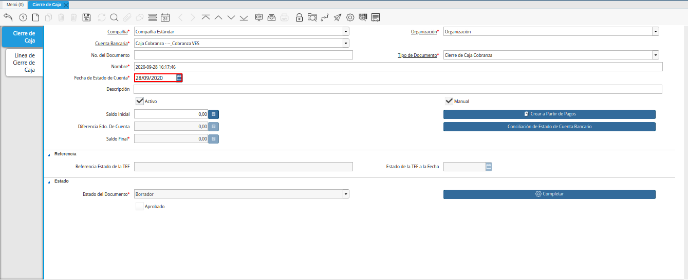
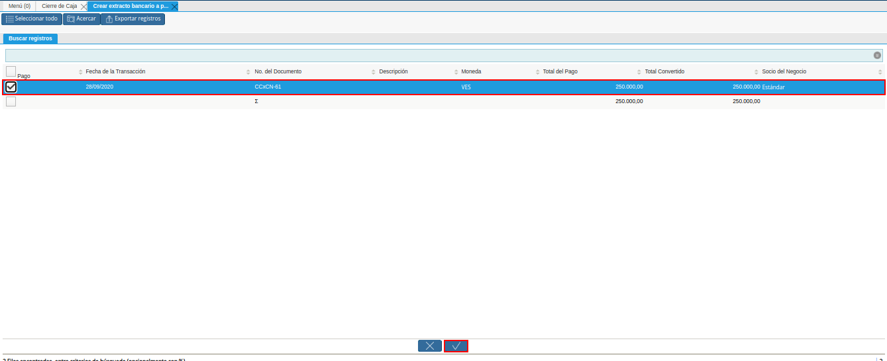
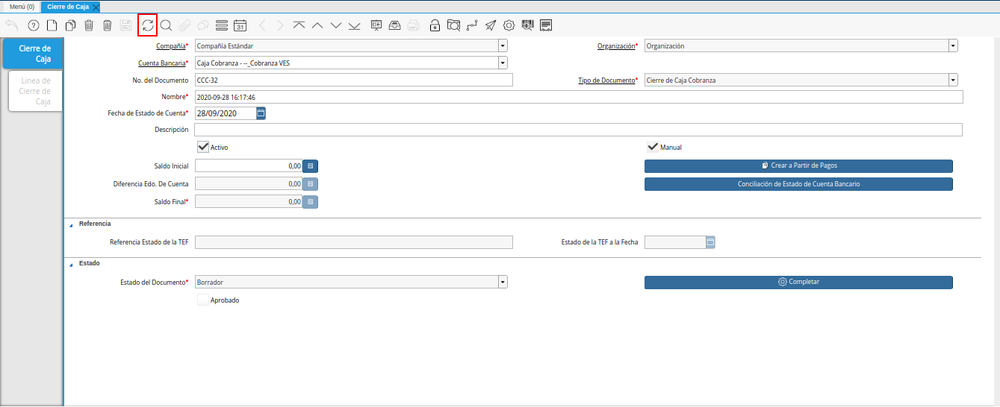
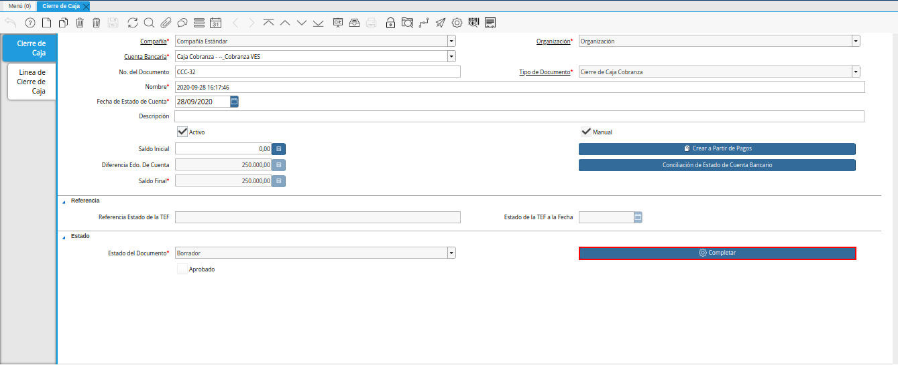
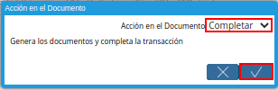

8.8.1. Registro de Cierre de Caja¶
Ubique y seleccione en el menú de ADempiere, la carpeta “Gestión de Saldos Pendientes”, luego seleccione la ventana “Diario de Caja”, por último seleccione la ventana “Cierre de Caja”.

Imagen 1. Menú de ADempiere
Podrá visualizar la ventana “Cierre de Caja”, donde debe seleccionar el icono “Registro Nuevo” y proceder al llenado de los campos correspondientes.

Imagen 2. Ventana Cierre de Caja y Selección de Icono Registro Nuevo
Seleccione en el campo “Organización”, la organización para la cual está realizando el cierre de caja.

Imagen 3. Campo Organización
Seleccione el tipo de documento a generar en el campo “Tipo de Documento”, la selección de este define el comportamiento del documento que se está elaborando, dicho comportamiento se encuentra explicado en el documento Tipo de Documento elaborado por ERPyA.

Imagen 4. Campo Tipo de Documento
Seleccione en el campo “Cuenta Bancaria”, la cuenta bancaria a la cual se le realizará el cierre de caja.

Imagen 5. Campo Cuenta Bancaria
Introduzca en el campo “No. del Documento”, el número de documento correspondiente a la secuencia del tipo de documento seleccionado.

Imagen 6. Campo No. del Documento
Introduzca en el campo “Nombre”, el nombre de referencia del cierre de caja que está realizando.

Imagen 7. Campo Nombre
Seleccione en el campo “Fecha de Estado de Cuenta”, la fecha en la cual se encuentra realizando la transacción.

Imagen 8. Campo Fecha de Estado de Cuenta
Introduzca en el campo “Descripción”, una breve descripción referente al documento que está realizando.

Imagen 9. Campo Descripción
Seleccione la opción “Crear a partir de Pagos”, para realizar el cierre de caja desde un ingreso generado anteriormente, este puede ser un cobro en caja, una selección de pago o una transferencia bancaria.

Imagen 10. Opción Crear a Partir
Podrá visualizar la siguiente ventana de búsqueda inteligente, donde debe seleccionar la opción “Comenzar Búsqueda” para buscar las transferencias entre cuentas realizadas.

Imagen 9. Ventana de Búsqueda Inteligente y Selección de Opción Comenzar Búsqueda
Seleccione el registro del movimiento creado anteriormente y la opción “OK”, para cargar la información a la pestaña “Línea de Cierre de Caja”.

Imagen 10. Selección de Movimiento y Opción OK
Note
Recuerde que para visualizar de manera detallada los registros cargados al cierre de caja que se encuentra realizando, debe seleccionar la pestaña “Línea de Cierre de Caja”.
Seleccione el icono “Refrescar” en la barra de herramientas de ADempiere, para refrescar el registro en la ventana “Cierre de Caja”.

Imagen 11. Icono Refrescar
Seleccione la opción “Completar”, ubicada en la parte inferior del documento.

Imagen 12. Opción Completar
Seleccione la acción “Completar” y la opción “OK”, para completar el documento.

Imagen 13. Acción Completar y Opción OK
Note
Recuerde que el procedimiento para gestionar el cierre de caja debe realizarce diariamente.